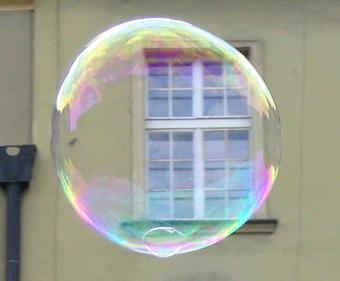
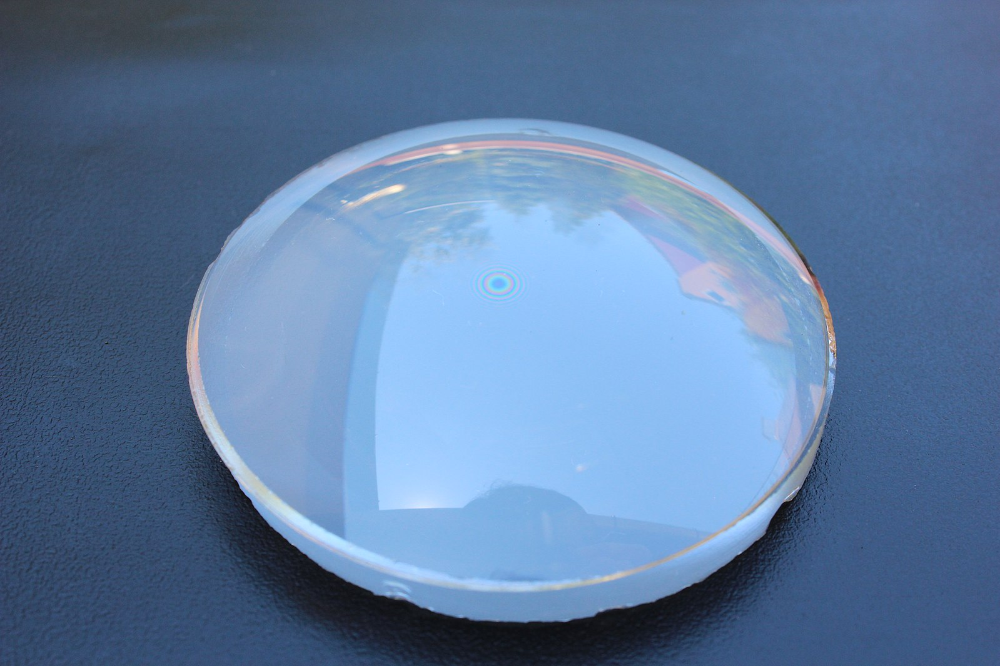
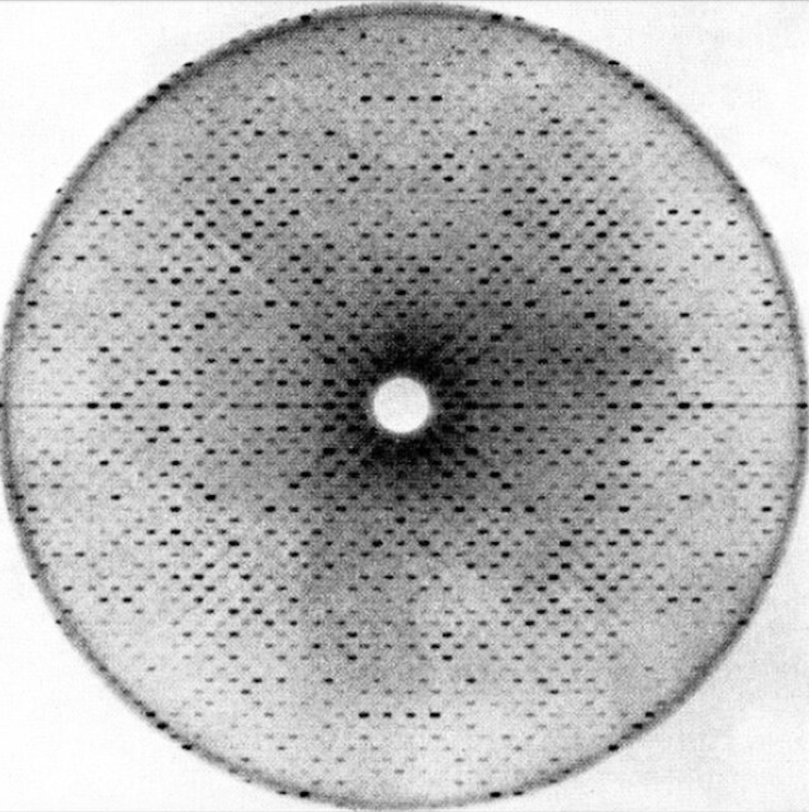
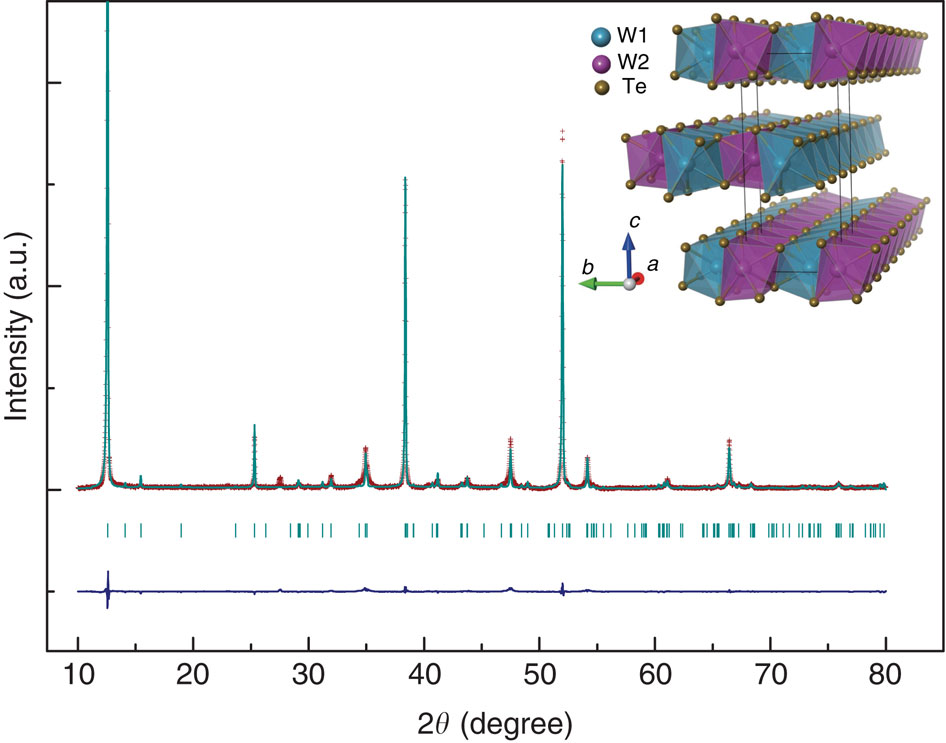
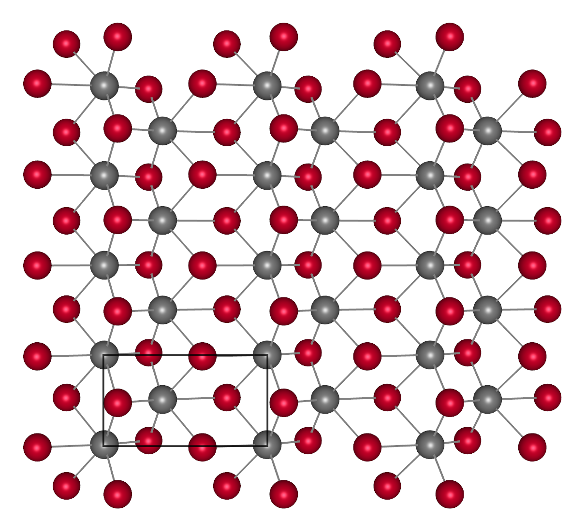
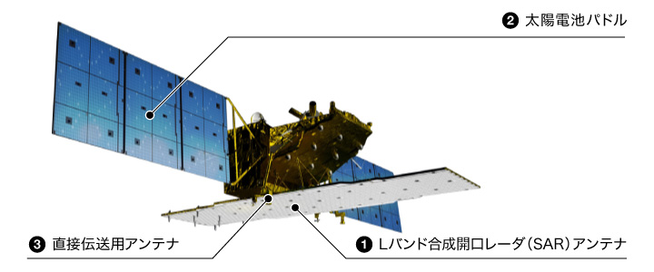
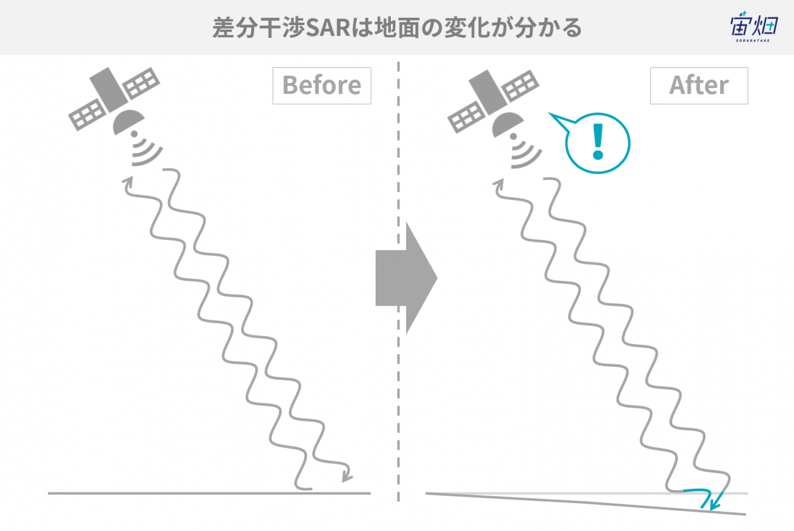
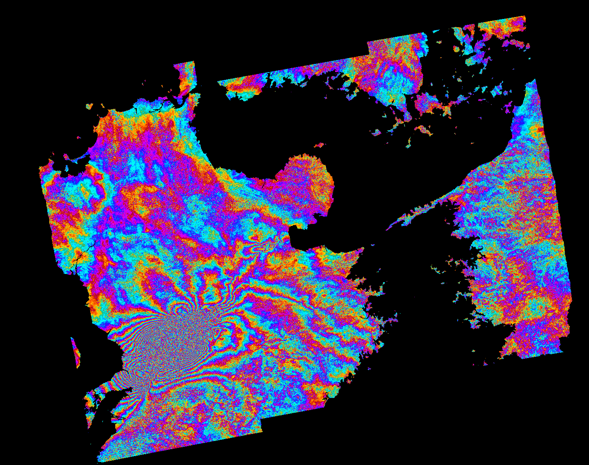
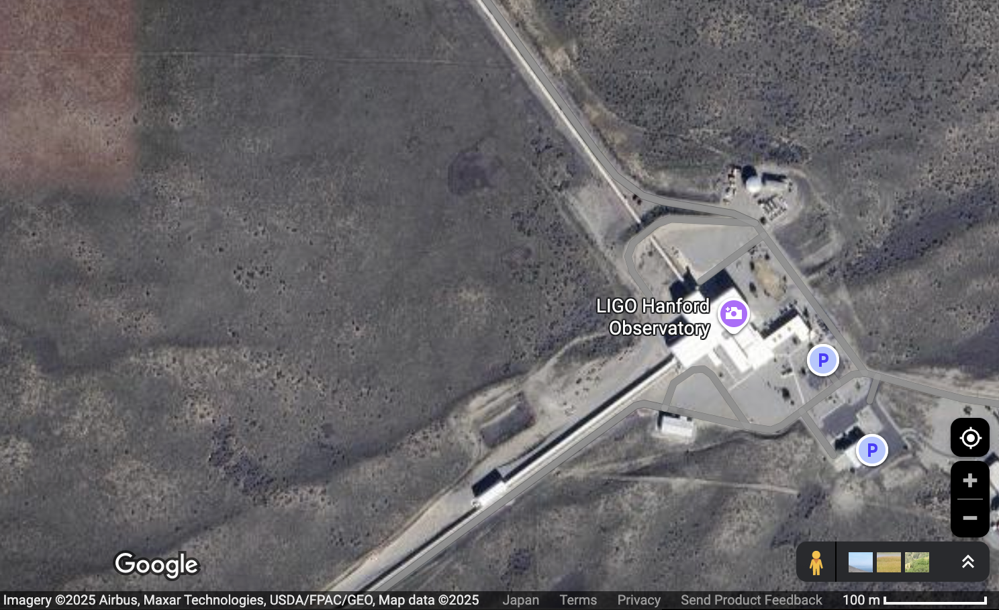
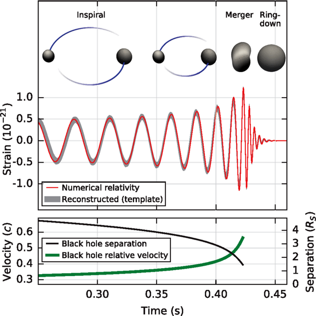

### シャボン玉の虹から原子も地震も重力も見える！ #### 物理の目「干渉縞」のすごい力 --- ### 自己紹介 <div class="profile-container"> <div class="profile-left"> * さめ(мег-сск) * ⚛️ VRChat物理学集会の主催 * 🧑🎓 社会人学生として通信制大学在学中 * 得意分野: * 📸 コンピュータビジョン (画像認識/点群処理) * 🌍 空間情報処理 (地理情報/リモートセンシング) * ☁️ クラウドインフラ設計/IaC (AWS, GCP) * [GitHub](https://github.com/s-sasaki-earthsea-wizard) * [YouTube](https://www.youtube.com/@SyotaSasaki-EW) * [Speaker Deck](https://speakerdeck.com/syotasasaki593876) </div> <div class="profile-right"> <img src="assets/images/icon_circle.png" alt="avatar" height="350px" width="350px"> </div> </div> --- ### 今日話すこと <div class="simple-box"> * シャボン玉でなぜ虹色が見えるのか？ * まったく同じ原理で原子も地震も重力も見える！ * X線回折、InSAR、重力波検出など </div> <br>  --- ## シャボン玉でなぜ虹色が見えるのか？ --- ### ニュートンリング <div class="container"> <div class="col"> <div class="simple-box"> * 平凸レンズを平面ガラスの上に置くと現れる同心円状の干渉縞 </div> <br> <div class="physics-principle"> <strong>原理</strong>: レンズと平面の間の空気層で光が反射 <br>→ 上面反射と下面反射の光が干渉 </div> </div> <div class="col">  <img src="assets/images/Newton_gyuru02.jpg" width="325px"> <div class="caption">ニュートンリングの実際の写真</div> </div> </div> --- ### なぜ同心円になるのか？ <div class="container"> <div class="col"> <div class="physics-formula"> <strong>空気層の厚さ $d$ と半径 $r$ の関係</strong> $$d = \frac{r^2}{2R}$$ $R$: レンズの曲率半径 </div> </div> <div class="col"> <div class="diagram-box"> </div> </div> </div> --- ### 干渉縞の明るさ <div class="physics-formula"> **光路差** $ \simeq 2d$ （往復分） </div> <div class="container"> <div class="col"> <div class="interference-bright"> <h4>💡 明るくなる条件</h4> $$2d = m\lambda$$ 波が同位相で重なる </div> </div> <div class="col"> <div class="interference-dark"> <h4>🌑 暗くなる条件</h4> $$2d = \left( m + \frac{1}{2} \right) \lambda$$ 波が逆位相で打ち消し合う </div> </div> </div> --- ### 測定の困難さ <div class="container"> <div class="col"> <div class="easy-measurement"> <h4>📏 測定容易</h4> **リング半径 $r$** - mm〜cm単位 - 定規やノギスで測定可能 - 目で見える大きさ </div> </div> <div class="col"> <div class="hard-measurement"> <h4>🔬 測定困難</h4> **空気層厚さ $d$** - μm単位 - 通常の測定器では不可能 </div> </div> </div> --- ### 具体例の計算 <div class="conversion-example"> ### 具体例で計算してみると... - リング半径 $r = 5$ mm を測定 - レンズ曲率半径 $R = 1$ m $$d = \frac{(5 \times 10^{-3} \text{ m})^2}{2 \times 1 \text{ m}} = 12.5 \text{ μm}$$ **目で見える5mmから、見えない12.5μmが分かった！** </div> --- ### 🌈 干渉縞は「増幅装置」 <div class="power-diagram"> 目に見えないμmの世界 → 目に見える縞模様の間隔（mm単位） $$\Downarrow$$ **数100~1000倍の拡大効果** </div> --- ### 🫧 シャボン玉の虹色の原理 <div class="soap-color-explanation"> 1. **膜厚が場所により異なる** 2. **膜の厚さで光路差が変わる** 3. **色ごとに強め合う条件が違う** - 赤（700nm）が強め合う場所 - 青（450nm）が強め合う場所 </div> <div class="highlight-box"> **ニュートンリングとの違い** - 媒質：空気層 → 石鹸水の薄膜 - 形状：同心円 → 不規則な模様 </div> --- <br> <div class="applications-preview"> ### 💡 この原理が基礎となって... - **原子の配列を見る** → X線回折（XRD） - **地殻変動を測る** → InSAR - **重力波を検出する** → LIGO </div> --- ## X線回折 ### （XRD, X-ray Diffraction） ### 原子の配列を「見る」技術 --- ### X線回折とは <div class="xrd-intro"> #### 🔬 1912年 マックス・フォン・ラウエが発見 - X線が結晶で回折することを発見 - 原子配列を直接「見る」初の技術 </div> <div class="container"> <div class="col"> <img src="assets/images/Bundesarchiv_Bild_183-U0205-502,_Max_von_Laue.jpg" height="300px"> <div class="caption">マックス・フォン・ラウエ</div> </div> <div class="col">  <div class="caption">X線回折のパターン</div> </div> </div> --- ### ブラッグの法則 <div class="physics-formula-large"> 光路差 = $2d\sin\theta = n\lambda$ の時にX線同士が強め合う！ </div> <img src="assets/images/Bragg_diffraction_2.svg" height="350px"> --- ### 回折パターンから構造を解く <div class="xrd-analysis"> 1. **測定**: 回折パターンを記録 - 角度 $\theta$ での強度を測定 2. **計算**: ブラッグの式を適用 - $d = \frac{n\lambda}{2\sin\theta}$ 3. **構造決定**: 格子定数の決定 - 原子配列の3D構造を再構築 </div> --- ### XRDの測定例 <div class="container"> <div class="col">  </div> <div class="col">  </div> </div> <div class="caption">WTe$_2$のXRDパターンと結晶構造(W:灰色, Te:赤)</div> <div class="highlight-box"> ピークの位置(強め合う角度)から結晶構造を決定できる！ </div> --- ### XRDの応用例 <div class="xrd-examples"> **材料科学** - 材料の結晶性評価 **地球科学** - 地質調査 **美術品の分析** - 顔料の分析による真贋判定 </div> --- ## InSAR (合成開口レーダー干渉法) ### 宇宙から地殻変動を「見る」技術 --- ### InSARとは <div class="container"> <div class="col"> <div class="insar-intro"> - 人工衛星から地表の変位を測定 - 広範囲を観測可能 </div> </div> <div class="col"> <div class="insar-intro"> **何が測れる？** - 地震による地殻変動 - 地盤沈下 </div> </div> </div>  <div class="caption">Image credit: JAXA</div> --- ### InSARの測定原理 <div class="insar-principle"> - 衛星から電波を送信 - 同じ場所を2回観測 - 地殻変動があれば距離が変化する - 2回の観測の位相差を計算 </div>  <div class="caption">Image credit: 宙畑</div> --- ### InSARで見えた熊本地震 (2016年) <div class="container"> <div class="col"> <div class="kumamoto-earthquake"> **地震による地盤変動** - 最大で1mの変動 **観測の特徴** - 震源を中心とした干渉縞 </div> </div> <div class="col"> <div class="kumamoto-fringes">  <div class="caption">Image credit: ESA</div> </div> </div> </div> --- ### InSAR技術の優位点 <div class="disaster-monitoring"> #### 🚨 災害監視への貢献 **迅速な被害把握** - 発災後数時間で解析完了 - 広域被害の全体像把握 - 立入困難地域の状況確認 <br> 🌏 **長期的な観測** - 同一地点を数年間継続して観測可能 - 地盤沈下のような長期的な変動の把握 </div> </div> </div> --- ## 重力波検出 ### 時空の歪みを「見る」究極の技術 --- ### 重力波とは <div class="container"> <div class="col"> <div class="gravitational-intro"> #### 🌌 アインシュタインの予言 - 質量が動くと時空が歪む - その歪みが波として伝わる <br> **しかし歪みが小さすぎて見えなかった...** </div> </div> <div class="col"> <div class="first-detection"> #### 🏆 歴史的瞬間 **2015年9月14日** - LIGOが初検出 - ブラックホール合体による重力波 - アインシュタインの予言から99年 </div> </div> </div> --- ### LIGOの測定原理 <div class="ligo-principle"> - L字型の4kmアームにレーザを往復させる - 重力波が通過すると... - 一方のアームが伸びる - もう一方が縮む </div>  <div class="caption">Image credit: Google Maps</div> --- ### 干渉で重力波を検出 <div class="ligo-principle"> **マイケルソン干渉計で検出** - アームの伸び縮みによって光路差が変化 - → 干渉パターンの変化 - $10^{-18} \text{m}$の変位を検出！ </div> <img src="assets/images/Initial_and_Enhanced_LIGO_schematics.png" height="300px"> --- ### 驚異的な感度 <div class="sensitivity-scale"> #### 📏 どれくらい小さい？ **検出された変位**: $10^{-18} \text{m}$ これは... - 陽子の大きさの**1/1000** - 地球-太陽間の距離に換算すると**水素原子1個分**に相当！ </div> --- ### 検出された重力波 <div class="gw-events"> #### 🌟 GW150914（初検出） - ブラックホール合体 - 太陽3つ分の質量に相当するエネルギーが重力波として放出 </div> </div>  --- ### 重力波検出の快挙 <div class="simple-box"> - 陽子よりもはるかに小さい変位を検出 - 様々なノイズ低減、干渉の増幅を利用 - **しかし根本的な観測原理は古典的なマイケルソン干渉計！** </div> --- ### まとめ：干渉縞は物理学の「目」 <div class="unified-principle"> #### 🌈 すべて干渉縞を利用 - 光路差 → 位相差 → 干渉パターン - 見えないものを見える化 - 微小な変化を増幅 - 原子から地球、宇宙まで - シャボン玉の虹と根本的には同じ原理！ - 干渉縞は物理学の「目」である！ </div> --- ### LT登壇者の募集 <div class="simple-box"> * 物理学集会ではLT登壇者を募集しています！ * どんなジャンルでもOK！ * 応募がないと主催がまたLTという名目のジャイアンリサイタルを開くことになります... * 興味のある方は物理学集会のDiscordサーバーまで！ </div> <img src="assets/images/qrcode.png" width="200px">